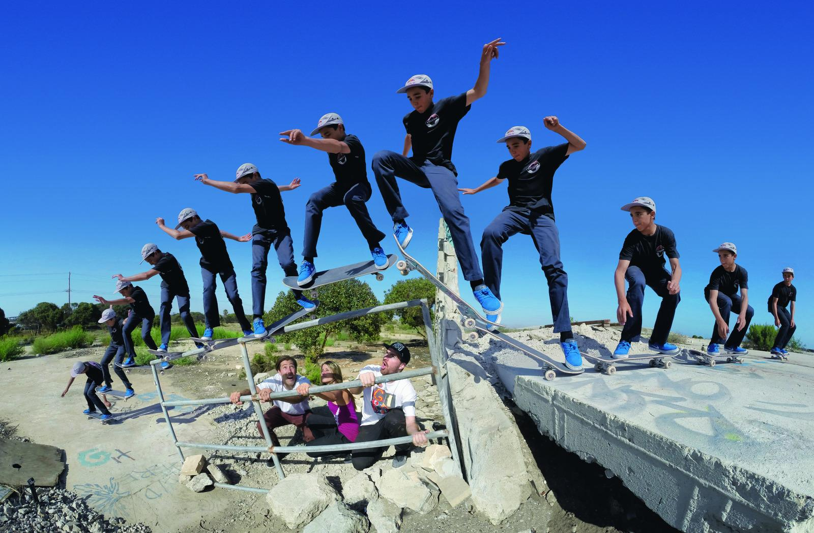
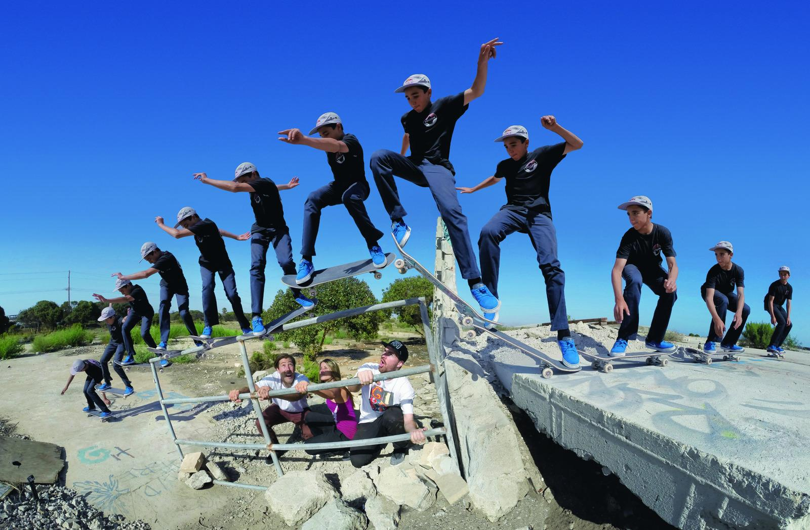
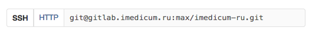

Git. Работаем в команде.
Мини-лекция для MSK команды. Владислав Лежнев aka LiVsI
iMedicum
Мини-лекция для MSK команды. Владислав Лежнев aka LiVsI
$ git
usage: git [--version] [--help] [-C <path>] [-c name=value]
[--exec-path[=<path>]] [--html-path] [--man-path]
[--info-path] [-p|--paginate|--no-pager] [--no-replace-objects]
[--bare]
[--git-dir=<path>] [--work-tree=<path>]
[--namespace=<name>] <command> [<args>]
PS: Да, я люблю git command line.
git commit --interactiveеще не все :)еще не все :)еще не все :)Теперь - всеgit clone ssh://ИМЯ_РЕПОЗИТАРИЯ

Наша Матрица - 